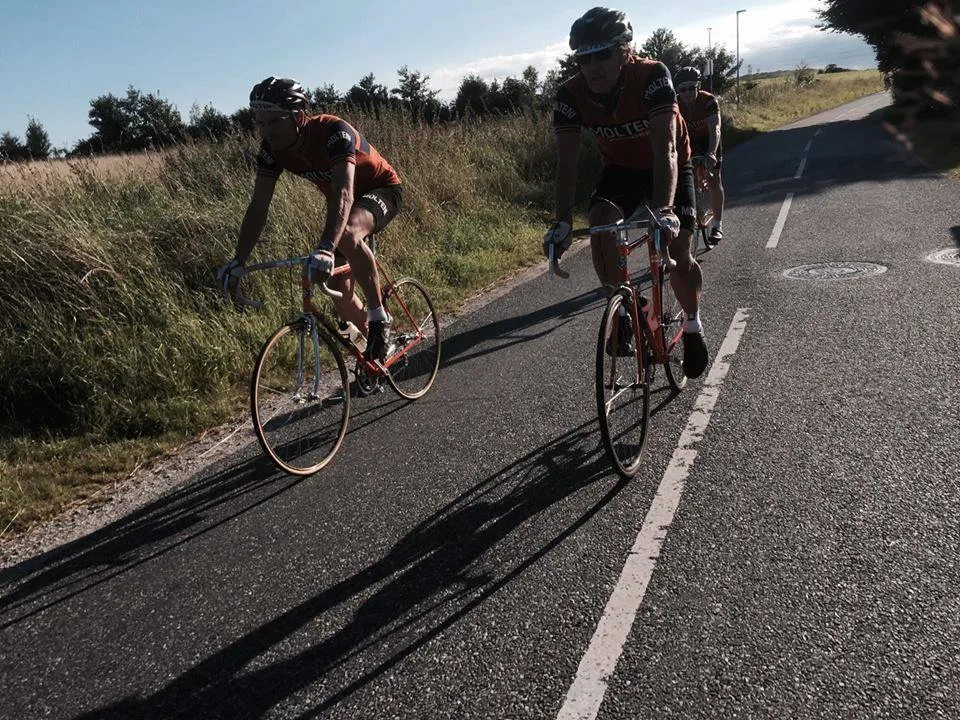
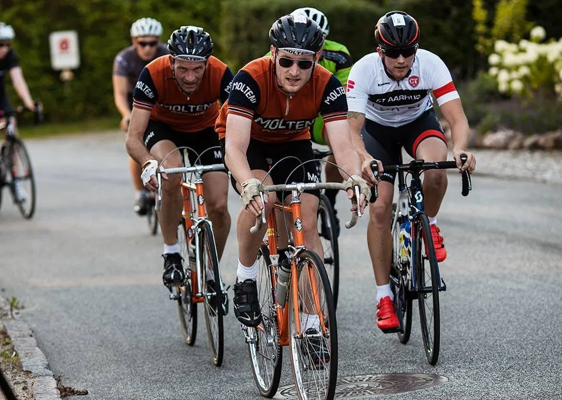

Løbsberetning: Ormslev Criterium 2016

Efter en længere ferieperiode mødte sommervejret tirsdag aften tilbage på job. Det var den lækreste sensommeraften som hang over Jylland, da Squadra Molteni kørte afsted mod den lille jyske landsby, Ormslev, som ligger et godt stenkast vest for Aarhus.
Her skulle køres Ormslev Criterium 2016. En omgang på 3,4 km. skulle passeres så mange gange som muligt indenfor en time, og afsluttes med to finaleomgange.
Squadra Molteni’s 4 udsendte, Niels, Eigil, Grane og Kasper, var også tilbage efter sommerferien, og mødte tidligt frem, for at teste ruten. Der skulle efter sigende være én pæn hård bakke på en kilometers penge som opløbsstrækning.

Efter en opvarmningsomgang på ruten, måtte vi en tur hen forbi løbsmaster Uggi Kaldan, for at høre hvor den bakke lå… (bakken fik dog grundig revanche over vores kæphøjethed).
Der blev gået til makronerne… og stålet
Starten gik og vi lå godt til. Det forreste af feltet var dog besat med strømlinede lycra-carbonryttere – og de lagde hurtigt fra land, da først løbet var blevet givet frit efter 1,5 masteromgang.
Eigil var ikke sen til at hægte sig på i en af de hurtige grupper helt i front. Niels, Grane og Kasper sad lidt længere nede – i rød zone og med tungen langt ude af halsen. Det blev virkelig gået til makronerne.
Kasper passerede målstregen som en af de sidste på første frie omgang med syren sprøjtende ud af svedkirtlerne i benene. Løbskommentator, Uggi Kaldan, fik i den anledning forhørt sig, meget diskret igennem løbsmegafonen, om Kasper nu igen havde været på druk dagen forinden.
Efter yderliger et par omgange lykkedes det Niels at køre op til Eigils gruppe. Men Niels måtte slippe igen efter en halv omgang.
Grane sad lidt længere nede og ventede på, at hans store diesel blev varm.
Kasper kom med godt tre omgange til mål op sammen med en mindre gruppe til Niels, som nu lå på mellemhånd med et par stykker. Kasper var godt kørende og klar i blikket.

“Vi prøver bare at følge med ham på stålet”, hørte jeg én i gruppen sige til en klubkammerat, som gruppen indhentede.
Dén dér bakke, som vi ikke “kunne finde” på vores opvarmningsomgang … den fandt vi! Også i den grad. Benene kan enda stadig mærke den.
Flere de lokale havde taget campingstolen med ud i indkørslen, og var med til at lave en fantastisk stemning på opløbsbakken.
Holdet nåede at køre godt 40 kilometer, og selvom de blev taget med en omgang af de hurtigste, var resultatet trods alt godkendt. Eigil kom i mål på en flot 32. plads i tiden 1:17:01.
Kasper og Niels kom i mål på henholdsvis en 38. og 40. plads i tiden 1:18:56 og 1:19:08. Grane kom i mål på en 48. plads.
Igen et pragtfuldt klassecykelløb fra Uggi Kaldan og Altomcykling.dk, der bød på grillpølser, øl, sodavand og sommerstemning efter løbet. Tak!